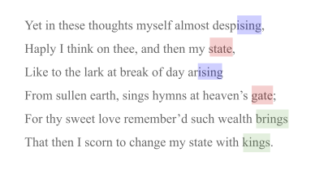

- D
- disjoint anchor #ken
A ken anchor that encompasses multiple, separate stretches of content as a single composite unit.
Suppose an English teacher wants to illustrate the rhyme scheme in Shakespeare’s Sonnet 29. She might define the endings of rhyming lines to be part of a single disjoint anchor. When she later links to such an anchor, she is able to point to all items that share a common anchor ID as a unit. In the following example, she could point to the red lines, the blue lines, or the green lines as link targets:

- E
- embeddable mode #ken
A mode of ken transformation that intends to produce output suitable for embedding in a containing website. To make the content consistent with container styling, style information is suppressed. To prevent cross-site scripting (XSS) and scriptless attacks, the output HTML is sanitized by removing various constructions (CSS,
<style>,<script>, many HTML tag attributes...). Contrast standalone mode. See also natural mode.- N
- natural mode #ken
The mode of ken transformation that's implied by the content of the document. Documents that contain a
standalone prefixorstandalone suffixproperty, or that contain any HTML content that would be sanitized in embeddable mode, are naturally standalone. Documents that contain no content requiring sanitization are naturally embeddable.- S
- standalone mode #ken
The mode of ken transformation that intends to produce rich, self-contained documents. Such output is not sanitized, and is therefore unsafe to display as a child of any other HTML container. Contrast embedded mode. See also natural mode.
- T
- transformation #ken
The process of converting ken to HTML.